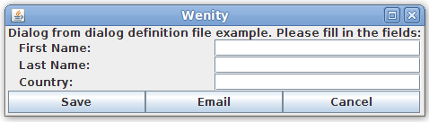
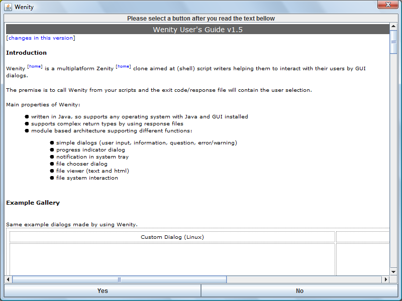
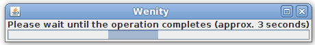
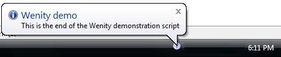
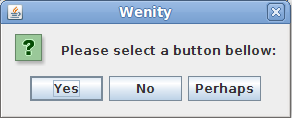
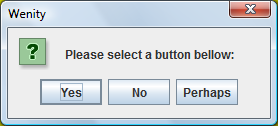

Introduction
Wenity [home] is a multiplatform Zenity [home] clone aimed at (shell) script writers helping them to interact with their users by GUI dialogs.
The premise is to call Wenity from your scripts and the exit code/response file will contain the user selection.
Main properties of Wenity:
Example Gallery
Same example dialogs made by using Wenity.
| Custom Dialog (Linux) | Html Viewer (Windows) |
|  |  |
| Progress Indicator (Linux) | Notification Balloon (Windows) |
|  |  |
Change History
Installation
Wenity requires installed Java 6 or higher and, if running on Linux, an X Server. To check if you have the correct Java version, issue java -version from the command line.
Using Wenity
The general syntax for Wenity is:
java -jar wenity.jar [-d] module_name module_parameters
where
| java -jar wenity.jar | starts wenity |
| -d | enables debug mode (optional) |
| module_name | is the name of the module to be invoked |
| module_parameters | are specific to the module to be run |
As an example, if you issue:
java -jar wenity.jar dialog question "Please select a button bellow:" "Yes,No,Perhaps"
Wenity will show you the following dialog (Linux/Windows)
|  |  |
and the exit code (%ERRORLEVEL% on Windows or $? on Linux) will contain the selected button's number counting from 1 (e.g for 'No' it will be 2).
This chapter describes the available Wenity modules; for usage examples please refer to the example scripts (example.sh/example.bat).
Processing User SelectionWenity returns user selection either in the exit code (%ERRORLEVEL% or $?) or in a response file (wenity_response.txt) based on the selected module.
General exit code values (valid for all modules):
Dialog Module
The dialog module shows a dialog to the user and returns user selection. Invocation:
java -jar wenity.jar [-d] dialog dialog_type dialog_text button_captions
where
| dialog | is the module name |
| dialog_type | specifies the dialog type: INPUT: allows a single line of user input to be entered (in a dialog with OK and Cancel buttons showing a question mark icon) QUESTION, INFO, WARNING, ERROR: shows a dialog with the specified icon type and buttons CUSTOM: lets you display a dialog defined in a dialog definition file (DDF); the ddf file full path is specified as the next argument (dialog_text); DDF file format:
dialog header text
title for input field 1
...
title for input field N
button caption 1, button caption 2, ..., cancel button caption
|
| dialog_text | is the text to be shown in the dialog; you can use the pipe (|) to break text into more lines; |
| button_captions | is the comma separated list of button captions (QUESTION, INFO, WARNING, ERROR only) |
Return value(s)
Dialog module returns user selection in exit code based on the dialog_type:
selected button number (counted from 1)
user input for first field
...
user input for last field
Please note that the file is created using unix-style line separator (line feed).
File Selector Module
The file selector module shows a file chooser dialog and returns the user selected file. Invocation:
java -jar wenity.jar [-d] fileSelector dialog_caption filter [no_file_error_message]
where
| fileSelector | is the module name |
| dialog_caption | specifies the caption of the dialog |
| filter | specifies the file name filter: all: show all files dir: show directories only ext1,ext2: show files having the specified extension only |
| no_file_error_message | if specified the user must select an existing file; if a non-existing file is selected this text will be shown |
Return value(s)
If exit code is zero (0) then the response file contains the full path (in OS specific format) to the selected file.
File Viewer Module
The file viewer module is a text/html file viewer with customizable buttons. Invocation:
java -jar wenity.jar [-d] fileViewer full_file_path header_text button_caption(s)
where
| fileViewer | is the module name |
| full_file_path | specifies the full path (in OS specific format) to the file to be shown; if file extension is 'html' or 'htm' it will be shown as HTML document; |
| header_text | is the text that is shown at the top of the dialog |
| button_captions | is the comma separated list of button captions |
Notes
Return value(s)
The selected button as a number, where the first button in the dialog is one (1).
File System Module
The file system module gives file system information. Invocation:
java -jar wenity.jar [-d] fileSystem operation_name full_path [req_free_space_in_mb]
where
| fileSystem | is the module name |
| operation_name | specifies the operation to be executed: hasFreeSpace: returns one (1) if the free space at the location specified by full_path is larger than or equal with req_free_space_in_mb pathExists: returns one (1) if full_path exists |
| full_path | specifies the full path (in OS specific format) to the file or folder to be acted upon |
| req_free_space_in_mb | the requested free space in megabytes (used only for hasFreeSpace) |
Return value(s)
If operation is finished normally (path exists/free space available) then the return value is one (1).
Notifier Module
The notifier module shows a notification balloon on the system tray. Invocation:
java -jar wenity.jar [-d] notifier type title message display_time_in_sec
where
| notifier | is the module name |
| type | specifies the notification type (INFO, WARNING, ERROR) |
| title | specifies the title of the notification balloon |
| message | specifies the message of the notification balloon |
| display_time_in_sec | specifies the time while the notification should be shown (note: the GUI might not honor this value) |
Return value(s)
If notification is shown then the return value is one (1).
Progress Indicator Module
The progress indicator module shows a progress monitor dialog until the specified status file is created. Invocation:
java -jar wenity.jar [-d] progressIndicator status_file_full_path header_text
where
| progressIndicator | is the module name |
| status_file_full_path | specifies the full path (in OS specific format) to the status file; the polling period for this file is 1 second |
| header_text | is the text that is shown above the progress bar |
Return value(s)
If progress monitor is closed by the creation of the status file then the return value is one (1).
Wenity is developed by Károly Kálmán[home]. This program is free to use and distribute (in original form).
Please note that Wenity is provided as is, without warranty of any kind and the author can not warrant that it is free from errors.
Use Wenity at your own risk!
THANK YOU!
Last modified: March 2013